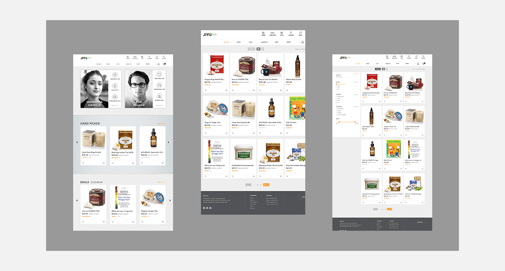
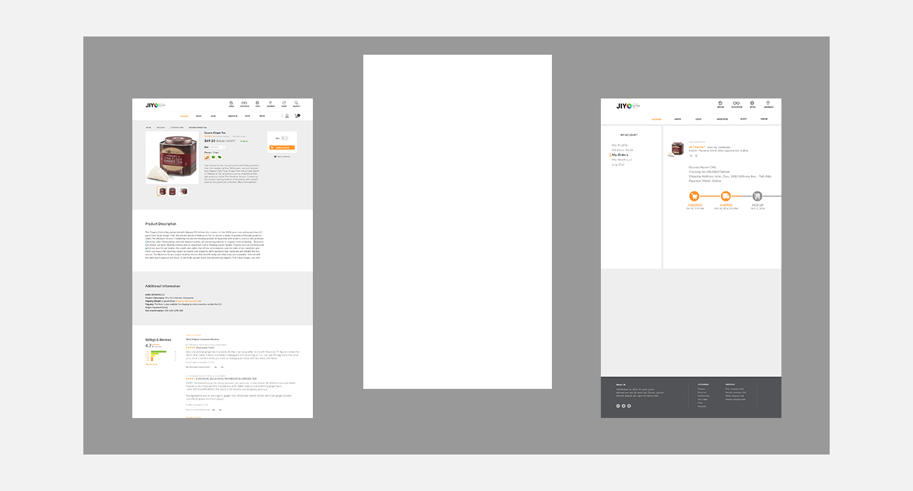
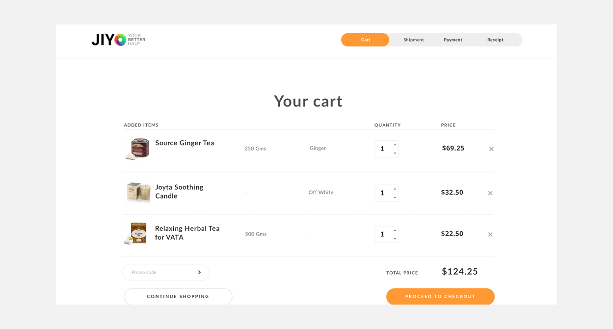
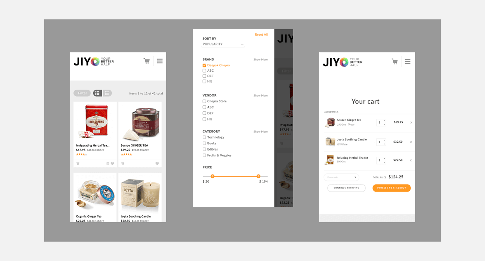
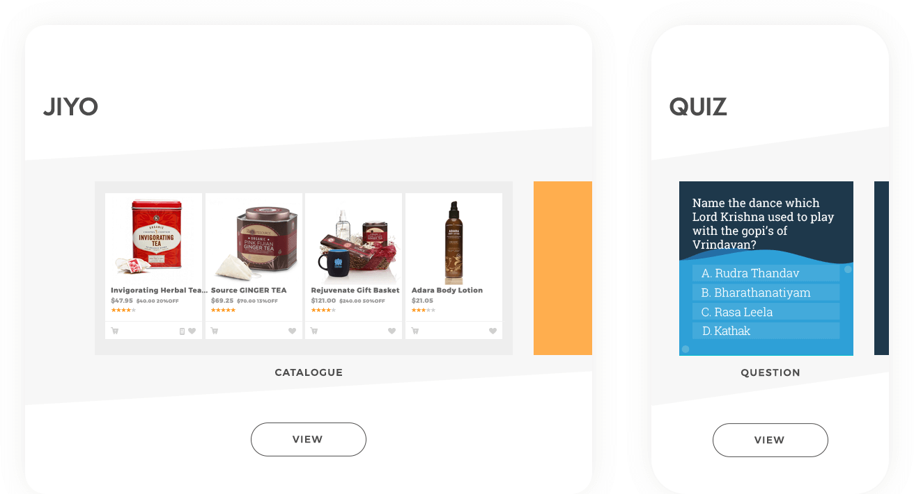

Project
Re-design and expansion of an existing, official Red Bull iPhoneapp. The unique Flow feature creates a seamless stream of video from clips uploaded (and edited in the app) by riders and/or filmers. Tagging clips by the tricks done in the clip, location, or event includes them in flows for each tag, which you can also follow. And a discover section features popular riders, tricks, tags and clips.
Clients
Flipcart
Clients
Flipcart
Clients
Flipcart

Intial concepts
The folowing two images show earlier concepts for a profile screen and experimentations using the three Red Bull brand colours to bring more life to the app. The colours and simpler aesthetic were dropped in favour of more tabs, a singular red brand colour and attitude & personality was introduced via icons and grunge elements.

Spec for development
An example of a spec created for the iOS developer at Red Bull to work from, alongside annotated breakdowns of flows and the original wireframes.


More Projects
